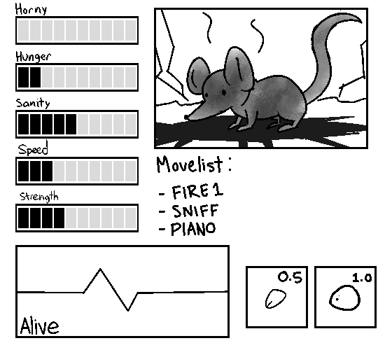
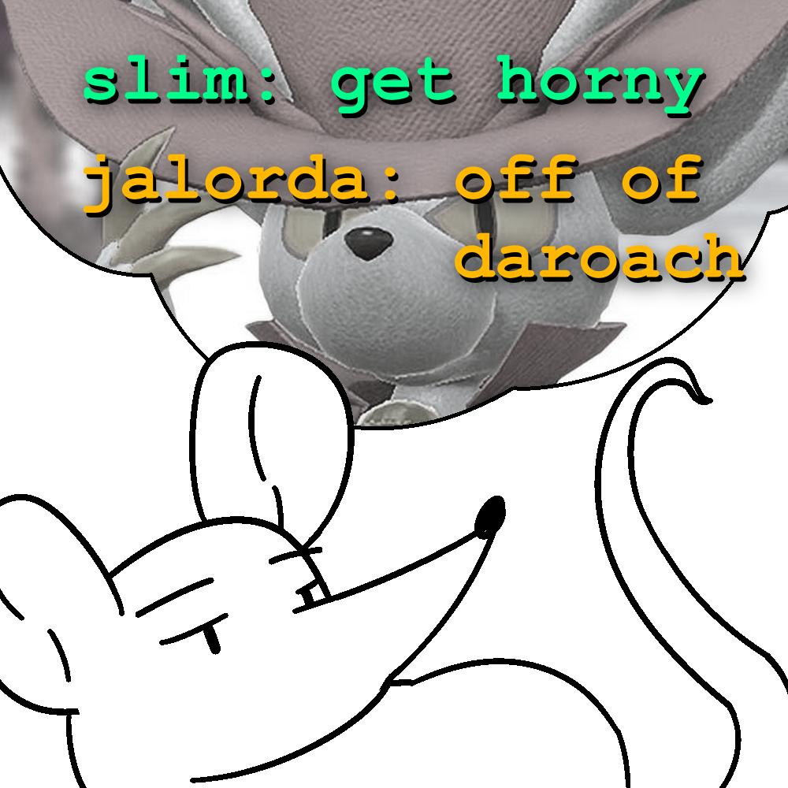
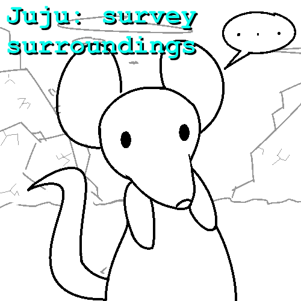

Our Pro Tagonist has awoken! And he's alive! A ratmas miracle!? What happens now?
~~~~~~~~~~~~~
Mi5KL: "Detonate"
Last time Bimpus "detonated" something, weird and bad stuff happened. You don't even have a DETONATOR for anything right now. Just your BROKE TOOTH and PEBBLE
~~~~~~~~~~~~~

slim: you're really gonna have 0 horny points after that long without nutting? yeah fucking right. get more horny points
jalorda: think of daroach da rat to up your horny
Please, there are cuter rat boys than this one. Bimpus can't start getting HORNY until he reaches HUNGER: 0 first. either
~~~~~~~~~~~~~

Juju: survey surroundings
Nothing is all around besides debris. It's quite an amazing sight. There's more space to skitter around than ever in your life. But maybe this amount of space has always existed
~~~~~~~~~~~~~

Pete: Scratch your ear
Yuck, there's weird gooey stuff behind Bimpus's ear. He feels better after a good scratch, feels nice everytime. Bimpus's SANITY goes up by 1 (4/10 => 5/10)
~~~~~~~~~~~~~

Goat: draw face on the pebble
Using the ashes on his fur, Bimpus summons an amiable ally MR. BALBOA! You can issue commands to Mr. Balboa by formatting your commands as Mr: Balboa: [command]. Do note that you can only command one party member at a time

~~~~~~~~~~~~~

Cranby: "Dragon Quest"
:^)
~~~~~~~~~~~~~

Super: jump 30ft above and observe the area
Your SMALL PHYSIQUE and NIMBLE SPEED allows Bimpus to jump 30 feet in the air. This is PROBABLY NOT a realistic jump height height for rats nor is the way this scene is portrayed. The POWER OF FICTION ignores these and allows Bimpus to see from the distance a SQUARE-SHAPED BARRIER SURROUNDING MOUNTAINS OF SOMETHING. Maybe he should check it out, but there's another issue going on this instant:

Bimpus's EVEN SMALLER BRAIN disallowed him to consider that he cannot land safely due to the POWER OF FICTION's bullshit. Will he land safely?!?!?!?!?!!?!?!?!!??
~~~~~~~~~~~~~